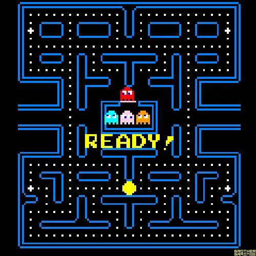
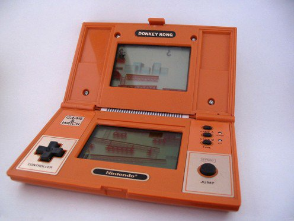

> Atari licencia el Space Invaders, pioneros en licenciar una maquina recreativa.
Hicieron una gran conversión que permitía jugar a 2 jugadores e incluía 112 niveles.
<

>
Sale al mercado de las recreativas Pac-Man, también conocido como Comecocos en España,
un videojuego arcade creado por el diseñador de videojuegos Toru Iwatani de la
empresa Namco. El protagonista es un círculo amarillo al que le falta un sector pareciendo
tener boca, y el objetivo es comer todos los puntos de la pantalla sin tropezar con los
fantasmas que trataran de evitarlo.
<

>
Los primeros años de la década de los 80 vieron como la división de videojuegos de
Nintendo creaba algunos de los más famosos títulos de arcade, y en paralelo a esta gran
actividad de lanzamientos en arcade y consolas, la empresa nipona estaba probando suerte
en el área de los juegos electrónicos portátiles, con su línea de Game & Watch.
La serie Nintendo Game & Watch (máquinas con pantallas LCD y con solamente un juego
cada una) fue creada por el visionario Gunpei Yokoi, a partir de una idea que se le
ocurrió tras ver en un tren a un aburrido hombre de negocios, el cual mataba su tiempo
jugando con los botones de una calculadora de bolsillo. Estas pequeñas consolas fueron
las responsables de la invención del pad (llamado vulgarmente "cruz", "cruceta"
o "palanca"), el cual se impuso en la gran mayoría de controles y que era ideal para
el control de juegos en 2 dimensiones. En el presente todos los controles de las
consolas conservan el clásico pad. Las "Game & Watch" fueron las precursoras de las
actuales consolas portátiles.
<